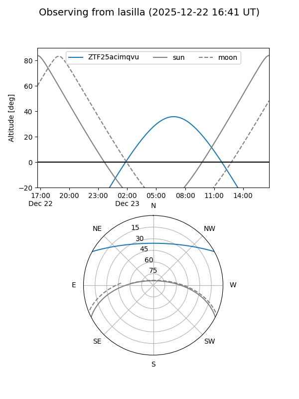
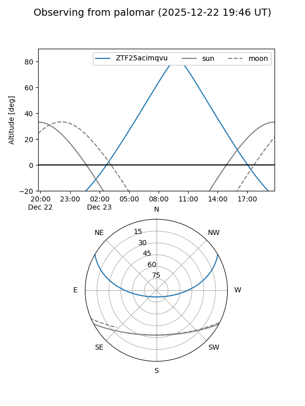

ZTF25acimqvu
Target ZTF25acimqvu at 2025-12-22 17:26
Aliases and brokers:
FINK: fink-portal.org/ZTF25acimqvu
Lasair: lasair-ztf.lsst.ac.uk/objects/ZTF25acimqvu
ALeRCE: alerce.online/object/ZTF25acimqvu
alt names
ZTF25acimqvu (ztf,fink_ztf)
Coordinates:
equatorial (ra, dec) = 123.0903,+25.00117
equatorial (HMS+DMS) = 08:12:21.67,+25:00:04.23
galactic (l, b) = (197.5945,+28.14072)
Flags:
Photometry:
last ztfg=20.24
1 ztfg detections
Lightcurve

Visibility


Additional plots